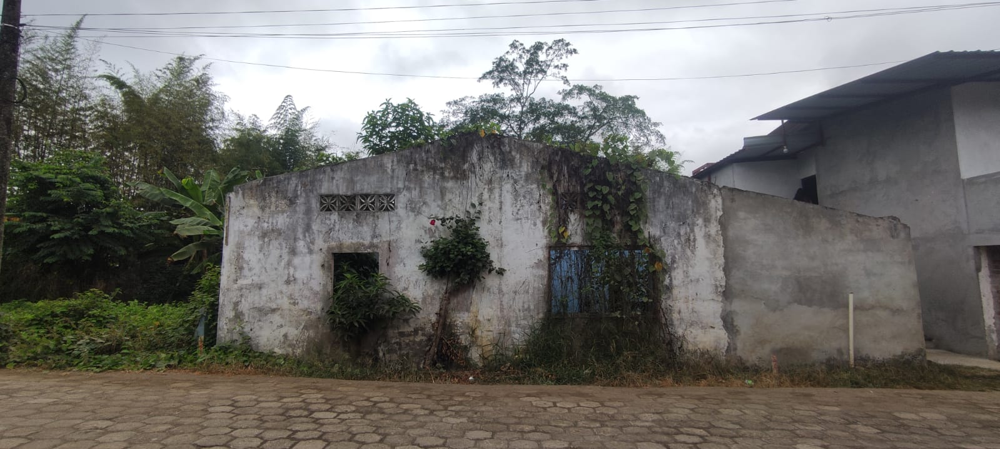
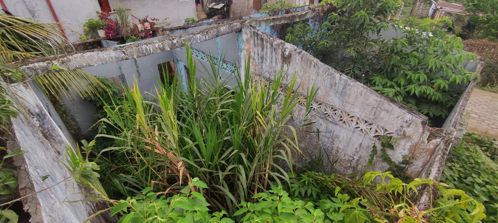
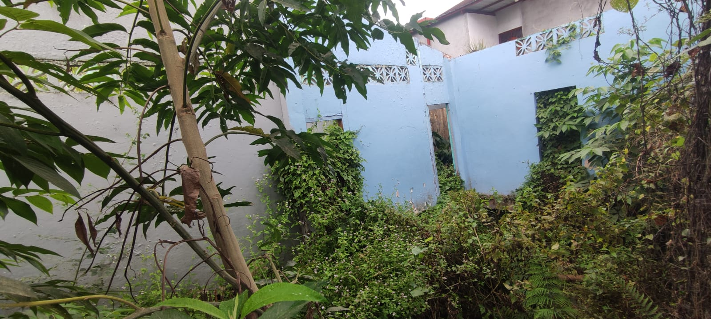
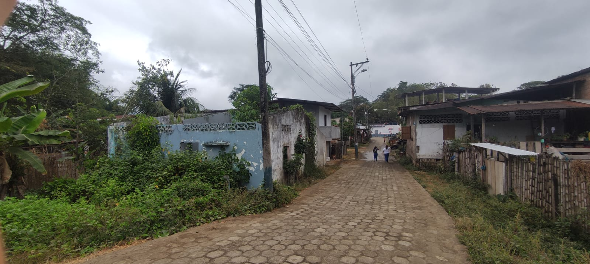

← volver al mapa
Terreno - EC-RJ-155069
EC-RJ-155069 · terreno · FLAVIO ALFARO, Manabi
★ Oferta destacada




Datos del remate
| Avalúo pericial | $7,280 |
| Tipo de bien | terreno |
| Área de terreno | 141.12 m² |
| Cantón / Provincia | FLAVIO ALFARO, Manabi |
| Dirección / Sector | cristo del consuelo |
| Señalamiento | Segundo Señalamiento |
| Fecha de remate | 2026-08-19 |
| No. de proceso | 1333220130193 |
Análisis vs. mercado
| Avalúo por m² | $52/m² |
| Mediana de mercado en la zona | $110/m² |
| Descuento vs. mercado | 53.2% |
| Comparables usados | 61 |
| Radio de búsqueda | 2000 m |
| Puntaje | 92/100 |
Descripción completa del avalúo
la propiedad consiste en un lote de terreno de forma rectangular con un área de 141.12 m², topografía plana, de ubicación esquinero, con accesibilidad a una calle adoquinada; sobre este terreno se implanta una edificación abandonada.
Análisis de inversión (IA)
★ Buena oportunidadEl descuento del 53.2% sobre la mediana de mercado, calculado con una muestra robusta de 61 comparables, es significativo y justifica investigar más a fondo. El terreno tiene atributos físicos favorables: esquinero, plano, acceso a calle adoquinada. El principal punto de alerta es la edificación abandonada que se menciona sobre el terreno, que puede implicar costos de demolición, ocupación de terceros o problemas legales adicionales.
A favor:
- Descuento del 53.2% sobre la mediana de mercado es alto y estadísticamente respaldado por 61 comparables
- Ubicación esquinera, que generalmente tiene mayor valor comercial y mejor accesibilidad
- Topografía plana facilita cualquier construcción futura y reduce costos de adecuación
- Acceso a calle adoquinada, lo que indica cierto nivel de urbanización del sector
- Avalúo pericial disponible ($7,280.38) como referencia base
En contra:
- Flavio Alfaro es un cantón con mercado inmobiliario limitado y menor liquidez, lo que puede dificultar una futura reventa
- El área de 141.12 m² es relativamente pequeña, lo que restringe usos comerciales o proyectos de mayor escala
- Avalúo pericial bajo en términos absolutos, reflejo de una zona de baja demanda
Riesgos a verificar:
- Edificación abandonada sobre el terreno: riesgo de ocupación por terceros (invasión o posesión), lo cual complicaría el proceso de toma de posesión real del bien
- Edificación abandonada puede tener estado estructural deficiente y requerir costos de demolición no previstos
- Verificar si la edificación abandonada tiene propietario registral distinto al del terreno o si existen derechos de terceros sobre ella
- Comprobar que no existan gravámenes, hipotecas o medidas cautelares adicionales sobre el inmueble más allá del proceso de remate
- Validar que los 141.12 m² estén correctamente delimitados y que no haya litigios de linderos con predios colindantes
- Zona de Manabí: verificar si el sector tiene riesgo de inundación o afectación sísmica que no esté reflejado en el avalúo
Generado por IA a partir de la descripción — no es asesoría legal ni financiera.
Esta ficha es una copia de lo publicado en el sitio oficial de remates
judiciales de la Función Judicial del Ecuador, para consulta — no
reemplaza el expediente judicial. remates.funcionjudicial.gob.ec no da
un link propio por remate, por eso se generó esta página aparte.
Antes de ofertar, el expediente debe revisarlo un abogado.